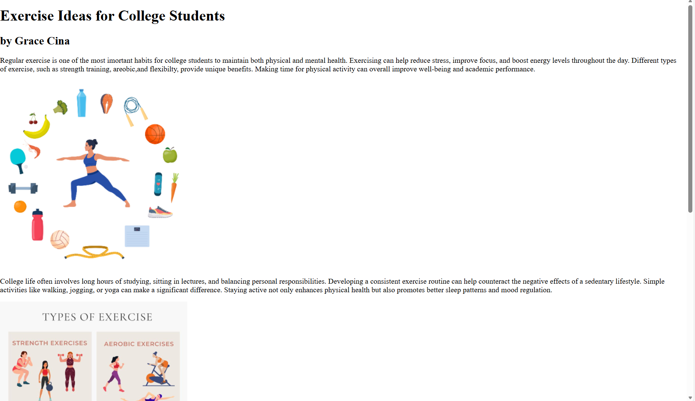
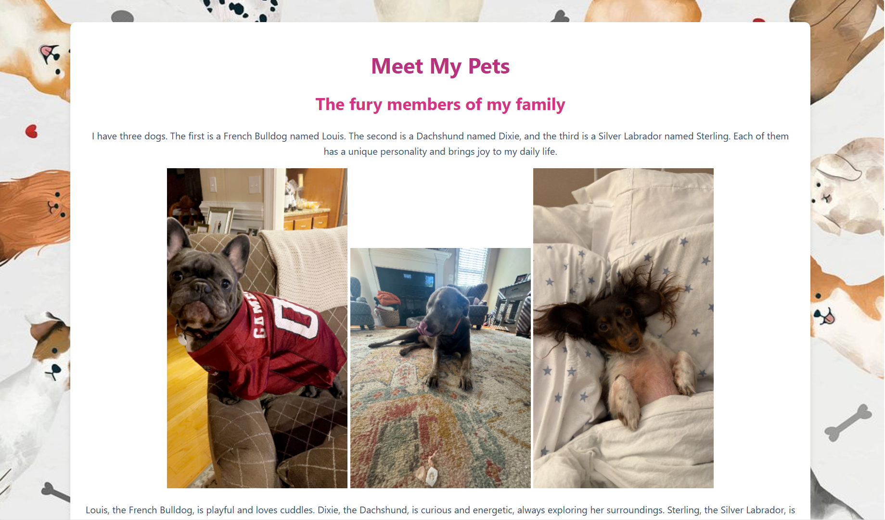
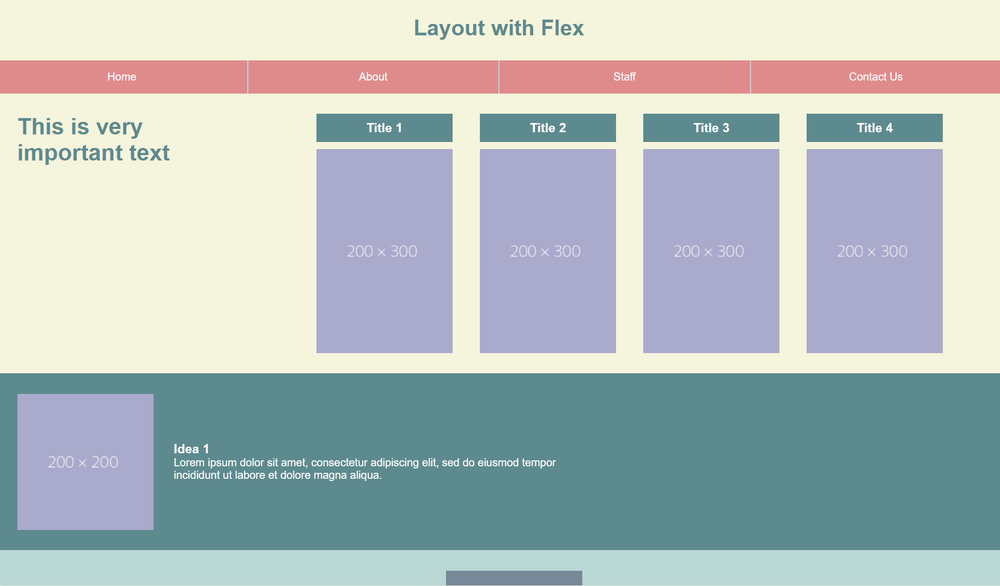
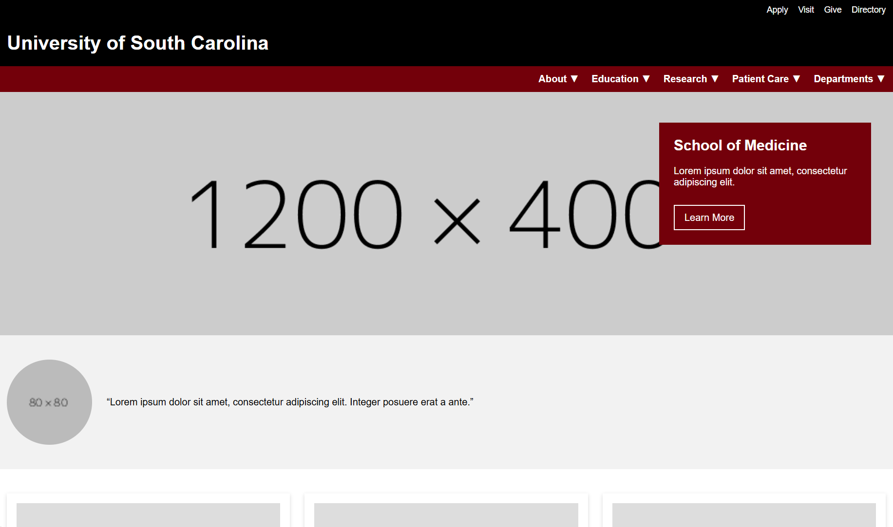
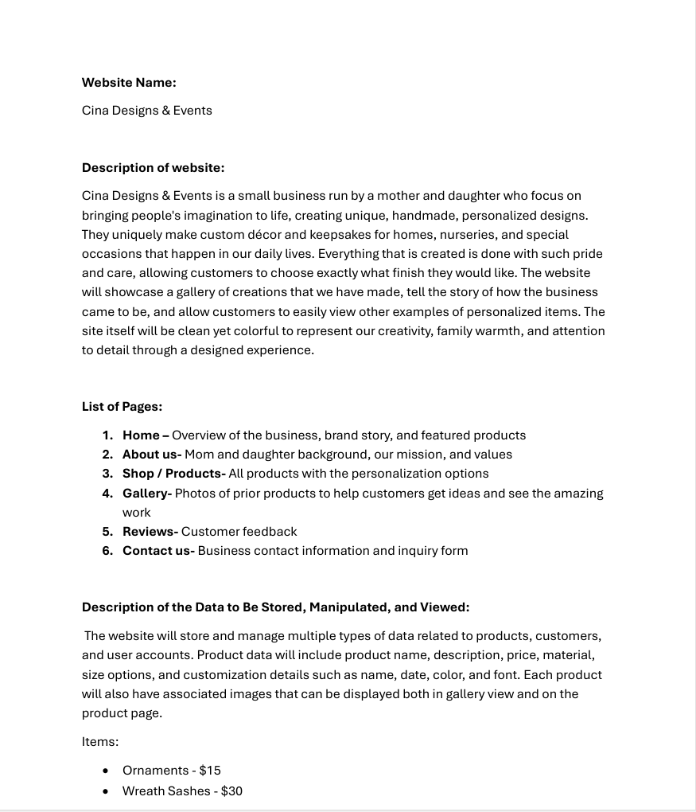
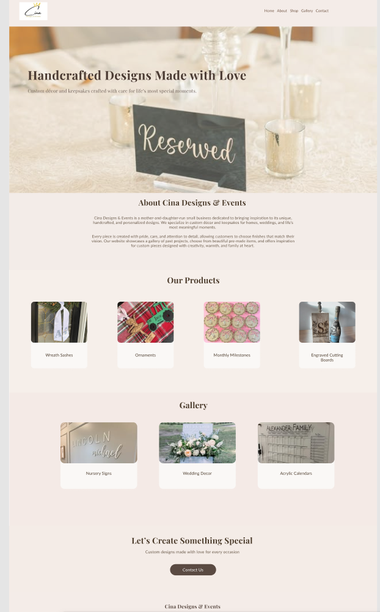

Basic HTML
This assignment focused on learning the structure of HTML documents and using semantic elements correctly.
View AssignmentIn this course, I will learn how to design and style the front end of websites using HTML and CSS, enhance functionality through JavaScript, and apply server-side development techniques to store and retrieve data efficiently.

This assignment focused on learning the structure of HTML documents and using semantic elements correctly.
View Assignment
This assignment introduced CSS styling techniques such as colors, fonts, spacing, and layout control.
View Assignment
This assignment explored creating responsive layouts using Flexbox and media queries.
View Assignment
This assignment involved recreating a given webpage layout and style using only HTML and CSS.
View Assignment
This project outlines my selected topic and initial design ideas for the final course project.
View ProjectThis project presents wireframes and mockups for the final course project.
View Project